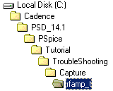
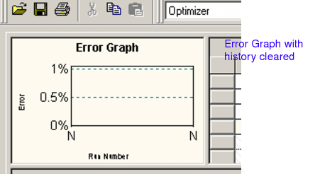
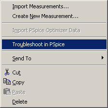
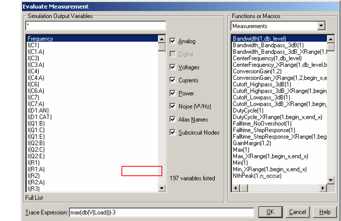
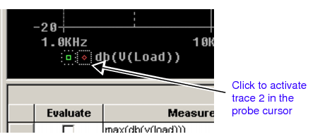
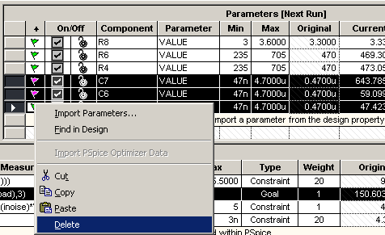

|
|
|||||||||
|
|
|
|
|
|
|
|
|
|
|
The Advanced Analysis troubleshooting feature returns you to PSpice1 to analyze any measurement specification that is causing a problem during optimization.
When an Optimizer analysis fails, the error message displayed in the output window or a yellow or red flag in the Specifications table shows you which measurement and simulation profile is associated with the failure.
If the failure is a simulation failure (convergence error) or a measurement evaluation error, the troubleshooting feature can help track down the problem.
From the Optimizer tool in Advanced Analysis, you can right click on a measurement specification and select Troubleshoot in PSpice. PSpice will display two curves, one with the data from the original schematic values and one with the data of the last analysis run.
When an optimization analysis fails, you can use the troubleshooting feature to troubleshoot a problem specification.
Read the error message in the output window to locate the specification to troubleshoot, or look for a yellow or red flag in the first cell of a specification row.
A pop-up menu appears.
|
|
|
Select Troubleshoot in PSpice. |
PSpice opens and the measurement specification data is displayed in the window.
The first trace shows the data from the run with the original schematic values.
The second trace shows the data from the last run.
|
|
|
Right click on a trace, and from the pop-up menu select Information. |
A message appears about the trace data.
|
|

|
In the PSpice window, check the measurement plot or click on |
|
|
|
To a measurement in PSpice, copy the edited measurement from PSpice to the Advanced Analysis Specifications table (Use Windows copy and paste) |
|
|
|
To parameter values in your schematic editor, import the new parameter data by clicking on the Optimizer Parameters table row titled "Click here to import a parameter..." |
|
|
|
Right click in the Error Graph and from the pop-up menu select Clear History. |
To show how to use the troubleshooting feature, we need an optimization project that fails to find a solution. We'll use the example in the Troubleshoot folder from the Tutorial directory. This example results in an unresolved optimization.
<target directory> \ PSpice \ Tutorial \


|
|
|
From PSpice menu in the schematic editor, select Advanced Analysis / Optimizer. |
Advanced Analysis opens to the Optimizer view.
There are four measurement goals included in this example.
|
|
|
If there is any history in the Error Graph, right click in the error graph window and select Clear History from the pop-up menu. |

|
|
|
Make sure the Modified LSQ engine is selected and click |
The optimization starts and makes four run attempts.
The Optimizer failed to find a solution. Let's troubleshoot the problem measurement in PSpice.
|
|
|
Right click in the specification row marked by the red flag (second row, Bandwidth(V(Load),3)). |
A pop-up menu appears.

|
|
|
From the pop-up menu, select Troubleshoot in PSpice. |
PSpice opens and the measurement specification data displays in the window.
We know the bandwidth constraint failed. We'll add a measurement in PSpice to find the -3dB point of the trace.
The Evaluate Measurement dialog box appears.

max(db(v(load)))-3
A measurement that calculates the -3dB point appears in the Measurement Results table.

The probe cursor shows that trace 2's -3dB point (6.4dB) occurs before 1kHz.
The Optimizer is increasing the bandwidth as we asked it to in the measurement specification, but not exactly in the way we wanted.
While this results show a slightly higher bandwidth, we are more interested in increasing the cut-off frequency.
One solution may be to introduce a specification that keeps the low frequency cutoff above 1kHz, but this would complicate the optimization and take longer to complete.
Another solution may be to simplify things. It could be that we have given the optimizer too many degrees of freedom (parameters), some of which may not be necessary for meeting our goals.
Let's check out the bandwidth measurement in Sensitivity to see which components are the most sensitive.
|
|
|
Return to Advanced Analysis and from the View menu, select Sensitivity. |
The Sensitivity tool opens.
|
|
|
Make sure Rel Sensitivity is displayed in the Parameters table. |
If you need to change the display from absolute to relative sensitivity:
|
|
|
Click |
Sensitivity runs.
We can see that in the relative sensitivity analysis, Capacitors 3, 6, and 7 are not critical to the bandwidth response.
We'll return to Optimizer and remove the capacitors from the optimization analysis. Reducing variables may help Optimizer reach a solution.
|
|
|
Return to the Optimizer tool and in the Parameters table, hold down your shift key and select the capacitor rows. |
|
|
|
Right click and select Delete from the pop-up menu. |

|
|
|
If there is any history in the Error Graph, right click in the Error Graph window and select Clear History from the pop-up menu. |
|
|
|
Select the Modified LSQ engine and click |
The optimization starts and finds a solution.
This section suggests solutions to problems you may encounter in any of the Advanced Analysis tools.
Check the following tables for answers these problems:
|
May not have a transient profile in the design. If a transient profile is included in the design, Smoke automatically picks the first transient profile for the analysis. |
Smoke analysis only works if you have one or more transient profiles. Smoke does not work on AC or DC sweeps. |
|
|
Smoke analysis won't run: message says "cannot find .dat file." |
Transient analysis simulation may not be done. |
Simulate the transient analysis in PSpice, review the waveform and measurement results, then run Smoke. |
|
Output window displays the following error for smoke parameters: "Data not found for Smoke test. Please verify Save Data and Data Collection options in the simulation profile" |
Data save start time is not zero or data collection options for voltages, currents and power is not set to All. |
From the Simulation menu in PSpice, choose Edit Profile to open the Simulation Settings dialog box. Ensure that the data save start time in the Analysis tab is 0. Smoke analysis works only if data save start time is zero seconds. From the Simulation menu in PSpice, choose Edit Profile to open the Simulation Settings dialog box. Ensure that the data collection options in the Data Collection tab is set to All for voltages, currents and power. |
|
Monte Carlo analysis takes too long. |
The number of runs may be too large. |
Decrease the number of runs in the Monte Carlo settings tab (from the Edit menu, select Profile Settings and click the Monte Carlo tab). |
|
I get an evaluation error message. |
You might be using the wrong profile for the type of measurement you're evaluating. |
Check the selected profile and change it to the profile that applies to your measurement. For example, change to an AC profile to evaluate bandwidth. |
|
The engine may have found a local minimum, which may not be the best solution. |
Use the Random engine to search for alternate starting points. Go to the Error Graph history and copy the best Random engine result to the Nth run (the end). Then switch to the Modified LSQ engine to pinpoint the final answer. |
|
|
Optimization didn't converge after running through several iterations. |
The parameters have changed the circuit's behavior, so the simulation results may not provide the information needed to meet the measurement goal. |
Use the Troubleshoot in PSpice feature to check the shapes of the traces and make sure they are appropriate for the desired measurement (right click on a measurement row and select the Troubleshoot command from the pop-up menu). For example, do the traces show that the filter still looks like a bandpass? Try changing the simulation settings to increase the range of frequencies. Restrict the parameter ranges in the Optimizer Parameters table to prevent the problem. |
|
Optimization didn't converge, but it looked like it was improving. |
Increase number of iterations in the Optimizer engine settings tab (from the Edit menu, select Profile Settings and click the Optimizer tab.) |
|
|
Optimization didn't converge. Parameters didn't change much from their original values. |
Selected parameters may not be sensitive to the chosen measurement. |
Choose different parameters more sensitive to the chosen measurement. |
|
Optimization didn't converge. It was improving for a few iterations, then the Error Graph traces flattened out. |
One or more parameters may have reached its limit. |
If appropriate, change the range of any parameter that is near its limit, to allow the parameter to exceed the limit. If the limit cannot be changed, you may want to disable that parameter because it is not useful for optimization and will make the analysis take longer. |
|
Problem: Results are not what you expected |
||
|
I set up my circuit and ran Smoke, but I'm not getting the results I expected. |
Your components may not have smoke parameters specified. |
Check the online Advanced Analysis Library List and PSpice library list for a complete list of components supplied with smoke parameters. Replace your existing components with those containing smoke parameters. For R,L and C components, add the design variables table (default variables) to your schematic. This table contains default smoke parameters and values. See the Libraries chapter of this manual for instructions on how to add this table to your schematic. Add smoke parameters to your component models using the instructions provided in our technical note, "Creating Models with Smoke Parameters," which is available on . |
|
Smoke analysis peak results don't look right: measured values are too small. |
Transient analysis may not be long enough to include the expected peaks or may not have sufficient resolution to detect sharp spikes. |
Check the transient analysis results in PSpice. Make sure the analysis includes any expected peaks. If necessary, edit the simulation profile to change the length of the simulation or to take smaller steps for better resolution. |
|
Smoke analysis average or RMS measured results are not what I expected. |
Transient analysis may not be set up correctly. |
Check the transient analysis results in PSpice. Make sure the average of voltages and currents over the entire range is the average value you're looking for. If you want the measurement average to be based on steady-state operation, make sure the analysis runs long enough and that you only save data for the period over which you want to average. |
|
I selected a custom derating or standard derating file in Smoke, but my %Derating and %Max values didn't change. |
Need to click the Run button to recalculate the Smoke results with the new derating factors. |
In Smoke, click |
|
My Smoke result has a yellow flag and a cell is grey. |
The limit (average, RMS, or peak) is not typically defined for this parameter. Grey results show the calculated simulation values; however, grey results also indicate that comparison with the limit may not be valid. |
The information is provided this way for user convenience, to show all calculated simulation values (average, RMS, and peak), but comparison to limits requires user interpretation. The color coding is intended to help. |
|
The derating factor for the PDM smoke parameter isn't 100% even though I'm using No Derating. |
This is OK. Smoke applies a thermal correction to the calculation. |
None needed. This is normal behavior. |
|
My Optimizer results don't look right. The current results are missing. |
Your cursor might be set on a prior run in the Error Graph. The results you see are history. |
In the Error Graph, click on the Nth (end) run's vertical line. Current results will appear in the Parameters table. |
|
In Optimizer, I finally get a good parameter value, but as I continue optimizing other things, the good parameter value keeps changing. |
The good parameter value needs to be locked in so it won't change for the next runs. |
In the Optimizer Parameters table, click the icon for the applicable parameter. This will close the lock and the parameter value will not change for subsequent runs. |
|
In Optimizer, there aren't any discrete values listed for my component. |
Discrete values tables are provided for RLCs. If your component is not an RLC, you'll have to create a discrete values table. |
Create a discrete values table for your non-RLC component using instructions provided in the Adding User-Defined Discrete Table section of the Optimizer chapter in PSpice Advanced Analysis User Guide. |
|
Can't see the Optimizer discrete tables column. |
Optimizer engine is not set to Discrete. |
Change the Optimizer engine to Discrete in the drop-down list. |
|
I can't find my individual Monte Carlo run results. |
Raw measurement tab is not selected. |
Click on the tab labeled Raw Meas to bring individual run results to the foreground on your screen. |
|
I want more detail on my Monte Carlo graph. |
Bin size is too small for desired detail. |
Increase bin size in the Monte Carlo setting tab (from the Edit menu, select Profile Settings and click the Monte Carlo tab). |
|
The Monte Carlo PDF / CDF graph doesn't look right for my measurement. |
The applicable measurement row may not be highlighted. |
Click on the measurement row. The resulting graph corresponds to that measurement. |
|
Right click the graph and select CDF graph from the pop-up menu. |
||
|
I can't find the parameter values for my Monte Carlo runs. |
Monte Carlo parameter values are only available in the log file. |
From the View menu, select Log File / Monte Carlo and scroll through the file to the applicable run. |
|
Problem: Can't make user interface do what you want |
||
|
I can't get all my red bar graphs to appear at the top of my Smoke or Sensitivity tables. |
Click twice on the bar graph column header. The first click puts all the red bars at the bottom. The second click puts them at the top. |
|
|
I don't want to see the grey bars in Smoke. |
Average, RMS, or peak limits that don't apply to your parameter may be selected for viewing. |
Double click the message flag column header. This will sort the grey bars so they appear at the bottom of the data display. Right click and uncheck the average, RMS, or peak values on the right click pop-up menu. |
|
Why can't I use my Monte Carlo settings and results from PSpice? |
The programs are separate and use different input. |
Advanced Analysis Monte Carlo provides more information and can be run on more than one specification simultaneously. This is the trade-off. |
|
Monte Carlo cursor won't drag to a new location. |
The cursor can be moved, but it doesn't use the drag and drop method. |
Click once on the cursor. Click in your desired location. The cursor moves to the location of the second click. |
|
Problem: Not enough disk space or memory |
||||||||||
|
I get a disk space error message or an out of memory message and I'm running a Monte Carlo analysis. |
Too much data is being saved for the Monte Carlo runs. For example, in a 10,000-run Monte Carlo analysis where all data is collected and saved, the data file and memory usage may become very large. |
Turn off the option to save all simulation waveform data in Advanced Analysis. By doing this, saved data will be limited to just the current run. However, at this setting, the simulation will run slower.
Advanced Analysis will overwrite the data file for each run. |
||||||||
|
I get a disk space error message or an out of memory message and I'm running a Monte Carlo analysis (continued). |
Too much data is being collected for each simulation run. For instance, collecting voltages, currents, power, digital data, noise data, and all of these for internal subcircuit components results in a large data file and large memory use. Note: You can also place markers on nets, pins, and devices on the schematic and collect data at these marker locations. In PSpice, set the data collection option to At Markers Only for all the data types you want. See the schematic editor help for more information on how to use markers on the schematic. |
Limit data collection to only the information that is needed to perform Advanced Analysis. You can do this in conjunction with the data file solution mentioned on the previous page or do just this and save data for all Monte Carlo runs. To change data collection options for each simulation, do the following for each simulation profile used in Advanced Analysis:
|
|
Depending on the license and installation, either PSpice or AMS Simulator is installed. However, all information about PSpice provided in this book is also true for AMS Simulator. |